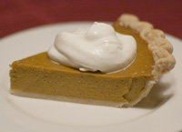

Overview

Whether you're hosting a festive party or a casual get-together with friends, our Pumpkin Pie will make entertaining easy!
- Original recipe yield
- 1 × 9-inch deep dish pie
- Prep Time
- 10min
- Cook Time
- 1hr
- Ready In
- 1hr 10min
Ingredients
- 1 (9in) unbaked deep dish pie crust
- ½ cup white sugar
- 1 tsp ground cinnamon
- ½ tsp salt
- ½ tsp ground ginger
- ¼ tsp ground cloves
- 2 eggs
- 1 can (15oz) pumpkin puree
- 1 can (12fl oz) evaporated milk
Directions
- Preheat oven to 425°F
- Combine sugar, salt, cinnamon, ginger and cloves in small bowl.
- Beat eggs lightly in large bowl.
- Stir in pumpkin and sugar-spice mixture.
- Gradually stir in evaporated milk.
- Pour into pie shell.
- Bake for 15 minutes.
- Reduce temperature to 350°F; bake for 40 to 50 minutes or until knife inserted near center comes out clean.
- Cool on wire rack for 2 hours.
- Serve immediately or refrigerate.
Nutrition
- Servings Per Recipe
- 8
Amount Per Serving
- Calories
- 284
- Total Fat
- 12.1g
- Cholesterol
- 65mg
- Sodium
- 355mg
- Total Carbs
- 38.8g
- Dietary Fiber
- 2.7g
- Protein
- 6.3g